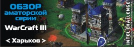

Обзор Харьковской аматорской серии

В тени начала финалов про серии, абсолютно незамеченным остался процесс проведения региональных финалов аматорской серии. И зря, этот процесс заслуживал самого пристального внимания. Тем более, что аматорские отборочные, в большинстве городов, собрали значительно больше участников, а сами «финалисты» показали красивую и зрелищную игру.
Одним из первых открывал проводил финалы аматорских отборочных Харьков. Здесь стоит вспомнить 4 предварительных тура, которые определили 14 игроков вышедших в финал отборочных, а так же курьезную ситуацию, при которой сильнейшие игроки Харькова- Snake и ToP)Exe, опасаясь сильнейшей конкуренции на финале «про» серии, просто не пришли на отборочные профессионалов, отдав предпочтение борьбе в более безопасных аматорах.
По общей договоренности было решено сократить официальный график проведения (больше чем неделя) на 2 дня, в которые и были отыграны все игры.
Если говорить о проведении, то чемпионат переехал в новый Харьковский клуб- «Адреналин». Хорошее железо и отличная работа главного судьи/администратора- pro100.Koshmar-а оставили только положительные впечатления. Впрочем ближе к делу.
Перед турниром стоило отметить 5 фаворитов- DNI.Imba-elf-а, Snake-а, Dimas-а и двух игроков клана ТоР- Exe и Fist-а. Негласно борьба шла именно между этой пятеркой игроков. Кроме того трое игроков (ToP)Diablo, ToP)Tema и Nihron) по личным причинам не смогли посетить финал отборов и в их игры были просеяны фри вины. Матчи стартовали с наиболее принципиальных поединков:
 Snake [2:0]
Snake [2:0]  Imba-elf
Imba-elf
Мало кто сомневался в том, что Снейк, негласно находящийся в топ-5 Украины выиграет все отборочные. Интерес был лишь в паре матчей. Что касается этой пары, то «Змей» выиграл убедительно, в обеих играх не оставив шанса сопернику.
ToP)Exe [1:1] Dimas
На первой карте Ехе уверенно доминировал с самого начала, быстро дошел до медведей и легко победил. На второй карте Димас, чувствуя близость поражения пошел застраивать. Небольшая доля везения, без сомнения помогла хуману- 1:1.
Snake [2:0] ToP)Exe
Игры на 7 и 11 минут, просто без шансов. Снейк уже 100% зарабатывает квоту…
 ToP)Fist [2:0] Dimas
ToP)Fist [2:0] Dimas
А вот это уже можно смело назвать небольшой сенсацией. Фист, обычно проигрывающий Димасу на турнирах резко собрался и оказался сильнее на двух картах. Особенно динамичной получилась вторая игра с хай-лвл героями, но орк доводит игру до победы…
Imba-elf [2:0] ToP)Exe
Это был явно не день лучшего игрока команды ТоР. Обычно легко побеждающий imba-elf-а, Ехе в этих играх был не похож сам на себя допуская смешные ошибки. Игры анализу не подлежат.
ToP)Exe [1:1] ToP)Fist
Дружеская игра двух тиммейтов закончилась не менее дружеской ничьей. В первой игре на EI Ехе с самого начала захватывает инициативу и затем уже не отпускает Фиста. Вторая игра проходила на TS где прокачанный FS и умелый херокилл зарешали против талонов Ехе. 1:1
Подводя итоги Харьковскому аматорскому финалу по war3 стоит сказать, что игры получились яркими и интересными. Фавориты не допускали осечек и проигрывали лишь в играх между собой. Победители определены и поедут на финал аматорской серии в Донецк. А мы лишь надеемся, что подобные яркие мероприятия будут проводиться чаще…
1-е место: Snake (Квота на финал)
2-е место: DNI.Imba-elf (Квота на финал)
3-е место: ToP)Fist (Квота на финал)
Статью в оригинале вы можете прочитать: здесь